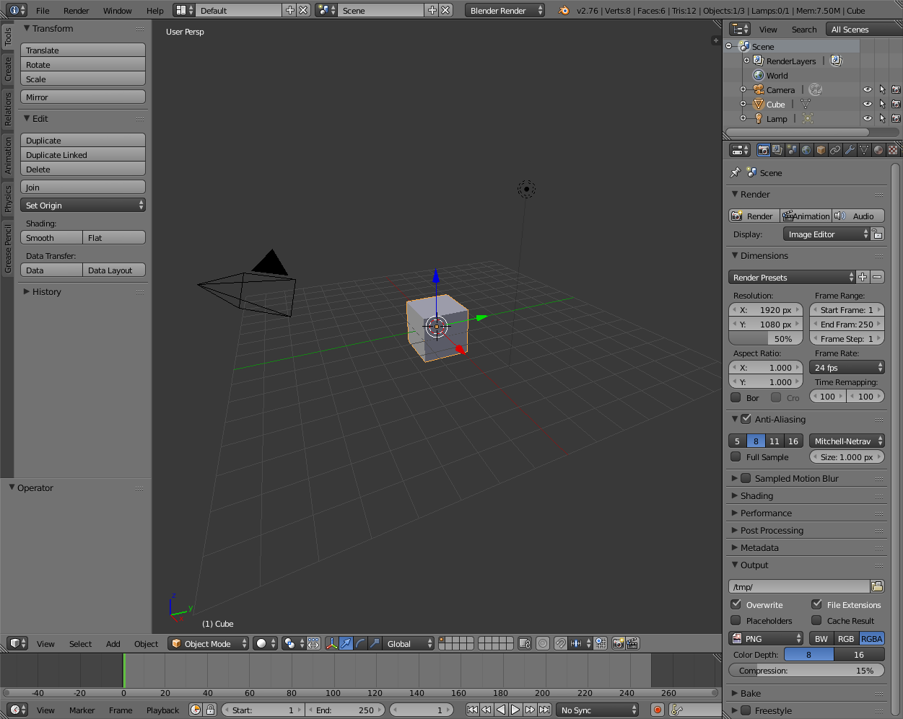
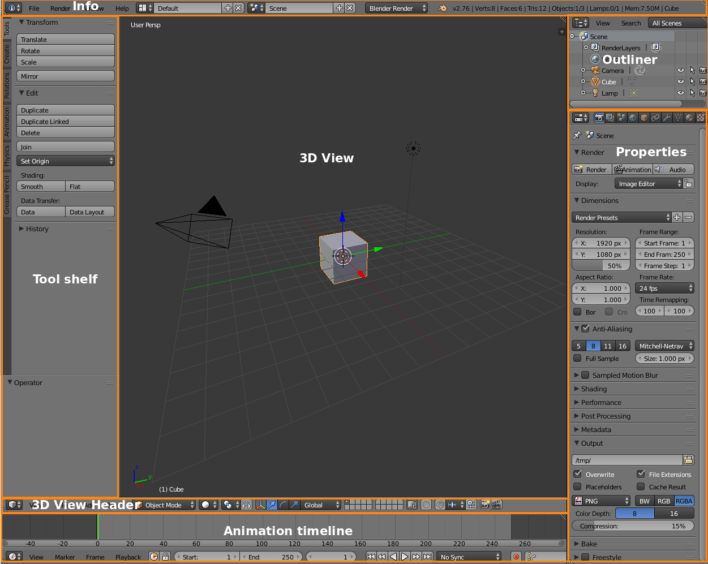

Interface¶
Blender is designed for efficiency and usability rather than for learning, so it can have a steep learning curve. This section incrementally walks through the basics of the interface and manipulating 3D objects.
Starting Blender¶
After starting Blender and clicking to dismiss the splash screen, we see this default interface:

Here’s an annotated version of the default layout:

Blender’s default layout
- Info
- Standard menus like
- 3D View
- Most of our work will happen in here. This is where objects are created and manipulated.
- Tool Shelf
- Contains recently-used tools and context-dependent options.
- Outliner
- Used for complex scenes; we can ignore for now.
- Properties
- Many settings can be found among these panels
- Animation timeline
- Used for animation; we can ignore for now.
See also
The Blender manual on the Interface has details about sections of the interface.